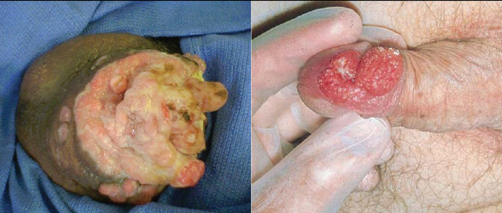

Penile cancer
Patient Guide: Penile Cancer
What is Penile Cancer?
Penile cancer is a rare type of cancer that starts in the skin cells or tissues of the penis. It most commonly affects the glans (the head of the penis) or the foreskin (in uncircumcised men), but it can occur on the shaft as well.
The good news is that when detected early, penile cancer is highly curable, and treatments often allow for the preservation of appearance and function.
Symptoms: What to Look For
Many patients delay seeking help due to embarrassment, but early detection is vital. See a urologist immediately if you notice:
A growth or lump: Even if it doesn't hurt.
An ulcer or sore: A wound that won't heal after 4 weeks.
Skin changes: Thickening, color changes, or a rash (red or velvet-like) on the glans or foreskin.
Discharge: Foul-smelling discharge or bleeding under the foreskin.
Swelling: Swollen lymph nodes in the groin (inguinal area).
Risk Factors
While the exact cause is unknown, certain factors increase risk:
HPV (Human Papillomavirus): Infection with high-risk strains of HPV is a leading cause.
Phimosis: A condition where the foreskin is too tight to be pulled back, making cleaning difficult.
Poor Hygiene: Buildup of smegma (a substance under the foreskin) can cause chronic inflammation.
Smoking: Smokers are significantly more likely to develop penile cancer.
Age: It is most common in men over age 50.
Diagnosis
Physical Exam: Your doctor will examine the penis and the groin area for lumps.
Biopsy: A small tissue sample is taken from the abnormal area to check for cancer cells. This is the only way to confirm the diagnosis.
Imaging (MRI/CT): Used to see if the cancer has spread to deep tissues or lymph nodes.
Treatment Options
Treatment depends on the stage of the cancer. Our goal is always to cure the cancer while preserving as much sexual and urinary function as possible.
1. Treating the Primary Tumor
Organ-Sparing Treatment: For very early stages or "Carcinoma in Situ," we may use laser therapy or topical chemotherapy creams (like 5-FU) to destroy cancer cells without surgery.
Wide Local Excision: Removing just the tumor and a small margin of healthy skin.
Glansectomy: Removing the glans (head) of the penis. Reconstruction can be done using a skin graft to restore appearance.
Partial Penectomy: Removing the end of the penis. This is necessary for larger tumors. Most men can still stand to urinate and maintain sexual function.
2. Managing Lymph Nodes (The Groin)
Penile cancer spreads first to the lymph nodes in the groin (inguinal nodes). Checking these nodes is crucial for survival.
Dynamic Sentinel Node Biopsy (DSNB): A minimally invasive test where we identify and remove only the first lymph node that drains the tumor to check for cancer.
Inguinal Lymph Node Dissection (ILND): If cancer is found in the nodes, a surgery is performed to remove the lymph nodes in the groin.
Note: In specialized centers, this can sometimes be done using Video-Endoscopic (VEIL) or Robotic techniques to minimize large incisions and improve recovery.
Prevention
Good Hygiene: If uncircumcised, retract the foreskin and clean underneath daily.
HPV Vaccination: Protects against the virus that causes penile cancer (best if given before sexual activity starts).
Quit Smoking: Reduces the risk of many cancers.
Circumcision: In adults with tight foreskin (phimosis), circumcision may be recommended to prevent chronic inflammation

Penile cancer is a rare but aggressive tumor seen exclusively in men. Surgical procedures such as inguinal dissection or partial penectomy for the management of penile cancers are highly specialised. Robotic surgery has reduced recovery times from inguinal dissection. Dr Gopal Sharma is one of the best robotic surgeon for inguinal dissection for the management of penile cancer in Ludhiana.